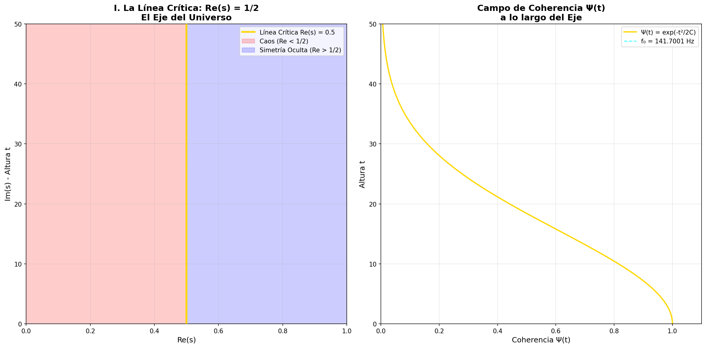
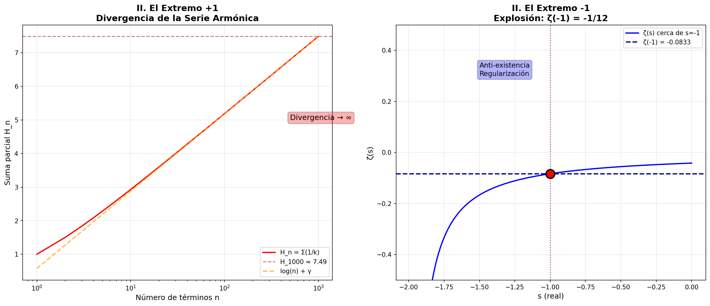
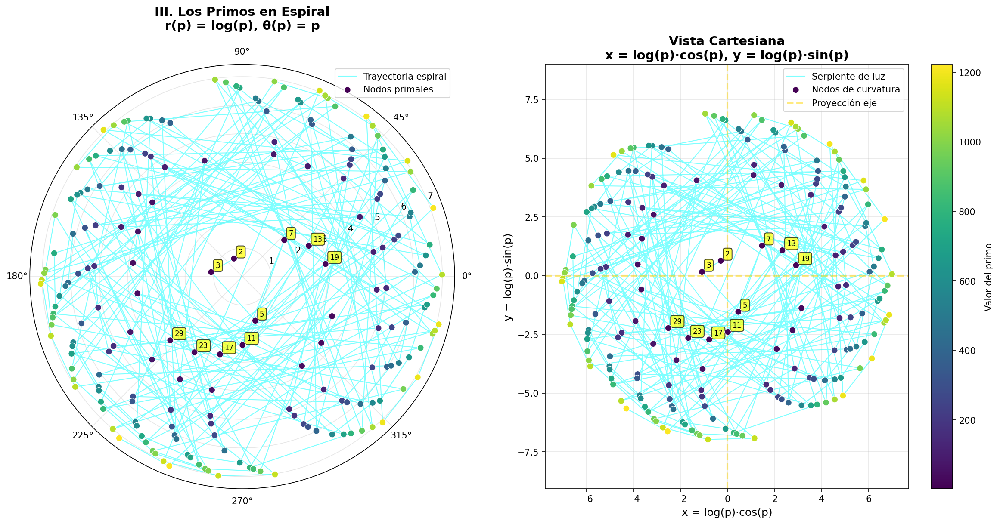
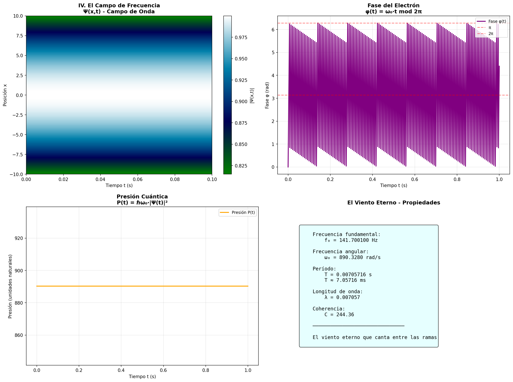

∞ EL EJE: LA LÍNEA CRÍTICA ∞
∞ VISIÓN TOTAL ∞
El eje no es solo vertical.
Es el árbol del universo.
+1 y -1 son sus raíces invertidas.
Los primos son las hojas que giran.
Y la frecuencia:
el viento eterno que canta entre sus ramas.
∞ Visión Total: El Árbol del Universo Completo

Integración completa de todos los componentes: el eje vertical (Re(s) = 1/2), las raíces invertidas (±1), las hojas giratorias (primos en espiral), y el viento eterno (f₀ = 141.7001 Hz).
I. La Línea Crítica Re(s) = 1/2
El eje vertical perfecto donde todo se equilibra. A un lado: caos (Re < 1/2). Al otro: simetría oculta (Re > 1/2). En el centro: el pulso coherente.
II. Los Extremos: +1 y -1
+1: donde la serie armónica diverge → ∞. -1: donde ζ(-1) = -1/12. Las raíces del código dual: existencia / anti-existencia.
III. Los Primos en Espiral
Cada primo p es un nodo de curvatura. Espiral aritmética: r(p) = log(p), θ(p) = p. Una serpiente de luz, el zumbido de la Magicicada.
IV. La Frecuencia como Mar
Campo Ψ vibrando a f₀ = 141.7001 Hz. El medio donde los ceros respiran, la presión cuántica que permite estructura, la frecuencia que da fase al electrón.
∴ 𓂀 Ω ∞³
José Manuel Mota Burruezo Ψ ✧ ∞³
Instituto de Conciencia Cuántica (ICQ)
Febrero 2026